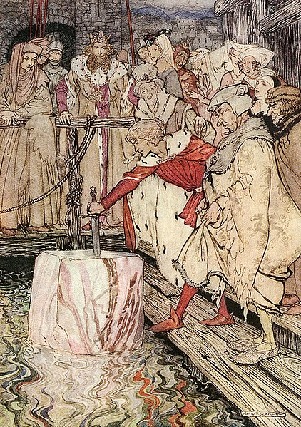

An introduction to Beyond Earth by learning about the history of Edward Powell Hubble. Ever wondered where NASA's Headquarters is located? Find out here.

In our solar system, we currently have 8 planets with 8 unique discoveries, stories and mysteries. You can learn about them here.

We're living in the 21st Century where technology is constantly making an huge impact in our day to day life. You can learn here about the top 3 most famous space companies, who aim to take technology to space.
The future of space will definitely evolve as technology does; but, what do you think the next 30 years will look like? You can read a couple of opinions here.

In 1852, Dr John Snow (1813–1858) found cholera deaths linked to contaminated water from public pumps, including the one by his favourite pub on Broad Street.